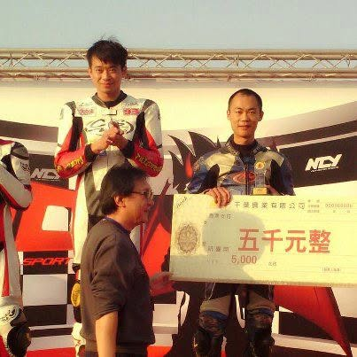
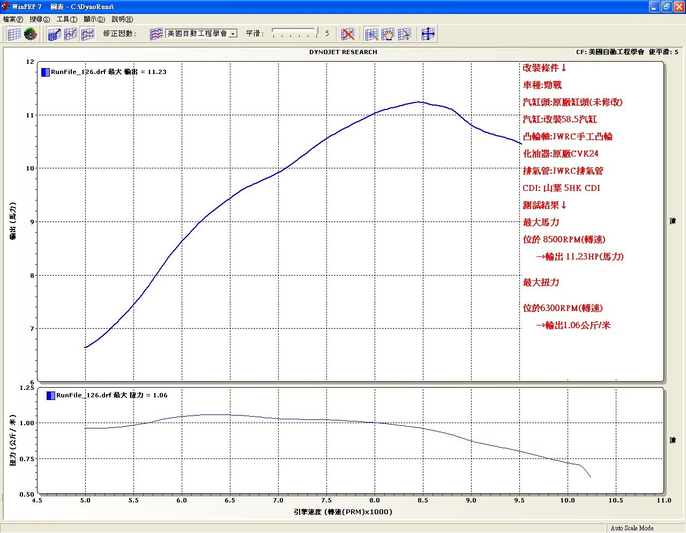
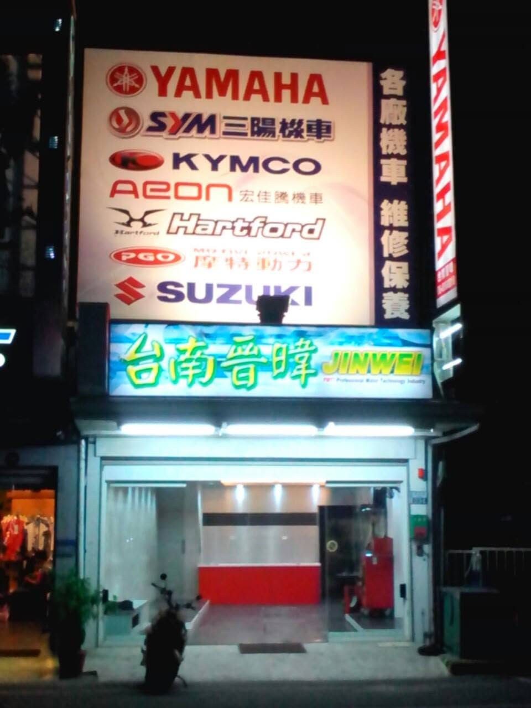
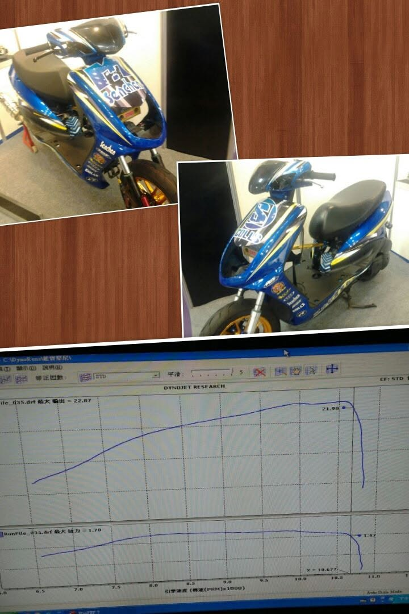
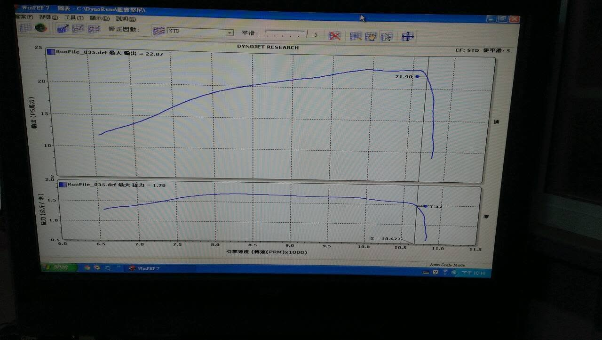
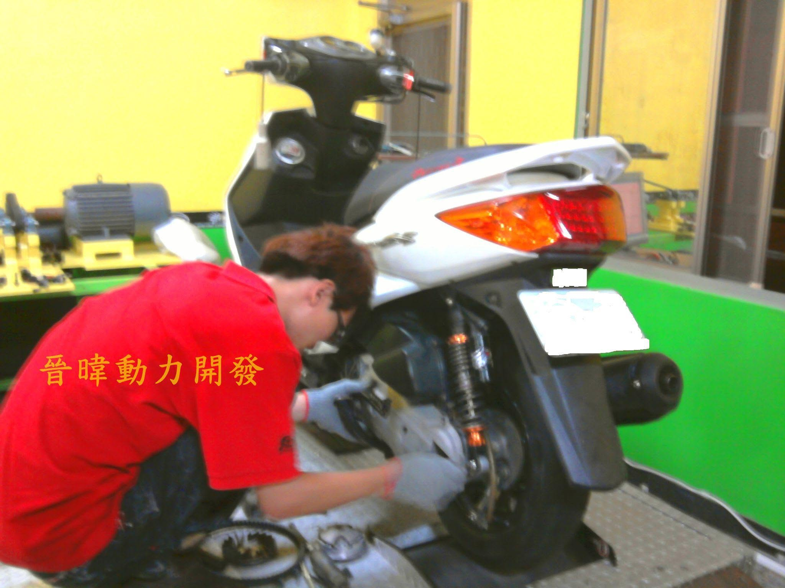
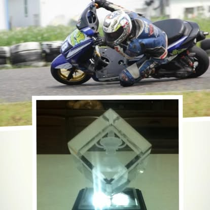
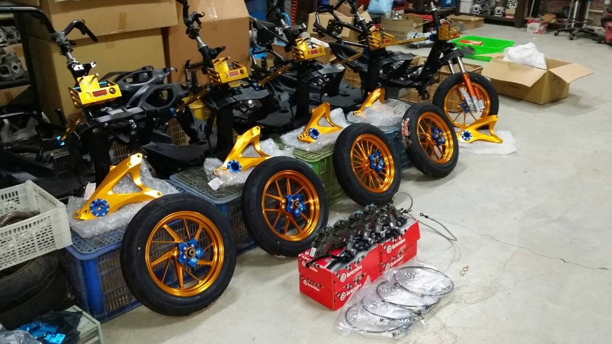
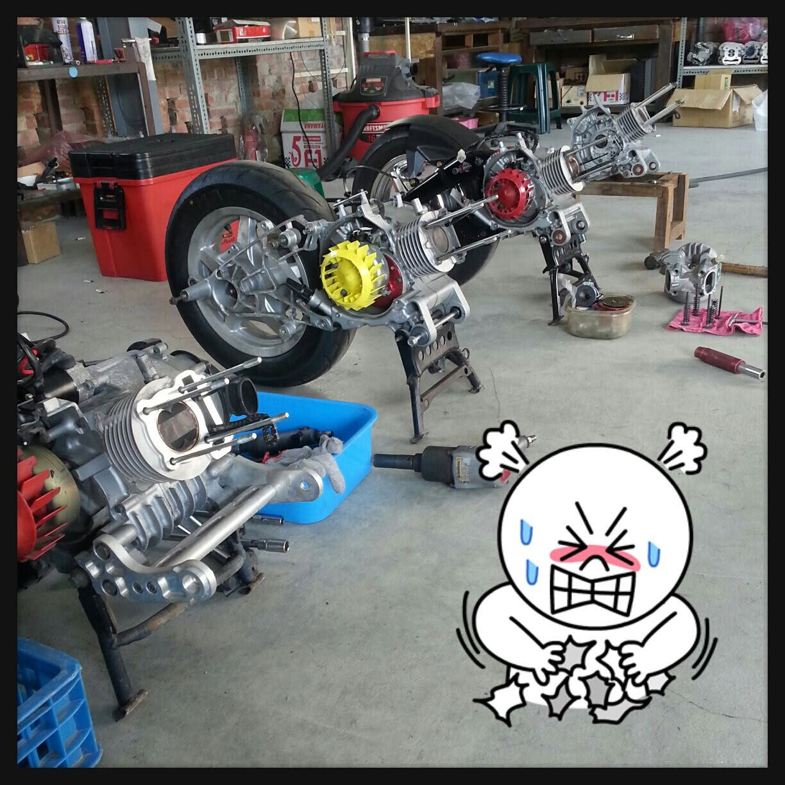
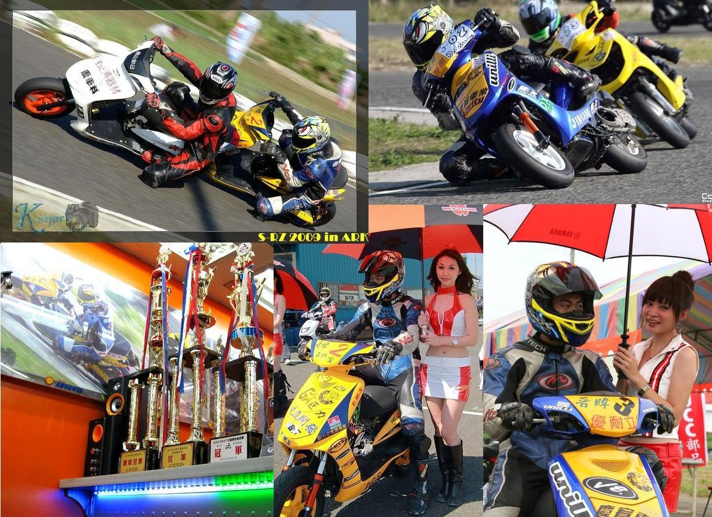

01
ENGINE DEVELOPMENT
發動機性能優化
從引擎需求與使用情境出發，建立基準、分析問題，再進行配氣與進排氣系統的整體匹配。

OUR APPROACH
我們相信性能優化不應只靠經驗與感覺。從問題現象、零件特性、流量數據，到實際發動機表現，每一個環節都應該被理解、分析與驗證。
FROM 2005 TO YAO TITAN
曜鈦精密科技的前身為晉暐開發動力。從 2005 年的引擎改裝、動力提升與零件開發，到 2008 年的繞圈賽實戰，再到今天的曜鈦精密科技，我們持續把賽場經驗轉化為發動機性能優化、零件耐用度提升、測試驗證與問題解決能力。
從引擎改裝與動力提升出發，投入凸輪軸設計與汽缸頭開發。
182cc 跨組別挑戰，兩組皆取得第二名；125cc 原廠基礎、排氣量不變改裝取得第一名。
聚焦發動機性能優化、零件耐用度提升與問題解決。
CORE CAPABILITIES
從引擎需求與使用情境出發，建立基準、分析問題，再進行配氣與進排氣系統的整體匹配。
從零件設計、使用條件與實際負荷出發，尋找性能與可靠度之間更好的平衡。
透過流量與性能測試建立客觀數據，讓開發方向可以被比較、被驗證。
從異常、性能瓶頸到零件問題，釐清原因、提出改善方案，再透過測試確認結果。
REAL HISTORY / REAL DATA






FROM PROBLEM TO SOLUTION
ENGINE DEVELOPMENT
從問題開始，而不是從零件開始。
發動機性能優化的核心，是找到問題的真正原因，再找到適合的改善方案。曜鈦從基準數據與實際使用條件出發，針對零件、配氣、進排氣與整體匹配進行分析，再回到實際發動機驗證改善結果。
TESTING / DATA
讓性能改善，不只是感覺。



FROM 2005 TO YAO TITAN
引擎改裝、動力提升、凸輪軸設計與汽缸頭開發。
182cc 跨 182cc 與 212cc 組別皆取得第二名；125cc 排氣量不變改裝取得第一名。
重新建立品牌，聚焦發動機性能優化、零件耐用度提升、問題解決。

ABOUT YAO TITAN
曜鈦精密科技的前身為晉暐開發動力，自 2005 年開始投入引擎改裝與動力提升，從南台灣速克達改裝與實車性能開發的實戰環境中累積經驗。
我們重視的不只是性能數字，而是發動機性能、零件耐用度與實際問題之間的平衡，讓每一次開發都有明確目的，並透過測試與數據找到真正有效的解決方案。
TECHNICAL CONSULTING
從問題開始，讓我們一起找到解法。
如果你有發動機性能瓶頸、零件開發需求、汽缸頭流量問題或耐用度問題，可以整理現況、使用條件與既有數據，再與曜鈦進一步討論。